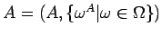
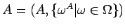
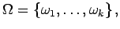
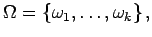

Es sei  eine Menge von Operationssymbolen, die in paarweise disjunkte Teilmengen zerfällt. In liegen die Konstanten, in die n-stelligen Operationssymbole. Die Familie heißt Typ oder Signatur. Ist A eine Menge und ist jedem n-stelligen Operationssymbol
eine Menge von Operationssymbolen, die in paarweise disjunkte Teilmengen zerfällt. In liegen die Konstanten, in die n-stelligen Operationssymbole. Die Familie heißt Typ oder Signatur. Ist A eine Menge und ist jedem n-stelligen Operationssymbol  eine n-stellige Operation in A zugeordnet, so heißt  eine
eine n-stellige Operation in A zugeordnet, so heißt  eine  -Algebra oder Algebra vom Typ (oder der Signatur)
-Algebra oder Algebra vom Typ (oder der Signatur)
Ist  endlich,  so schreibt man für A auch
endlich,  so schreibt man für A auch
Faßt man einen Ring als  -Algebra auf, so zerfällt wobei den Operationssymbolen die Konstante 0, Inversenbildung bezüglich Addition, Addition und Multiplikation zugeordnet sind.
-Algebra auf, so zerfällt wobei den Operationssymbolen die Konstante 0, Inversenbildung bezüglich Addition, Addition und Multiplikation zugeordnet sind.
Es seien A und  -Algebren. B heißt
-Algebren. B heißt  -Unteralgebra von
-Unteralgebra von  falls ist und die Operationen
falls ist und die Operationen  die Einschränkungen der Operationen auf die Teilmenge B sind.
die Einschränkungen der Operationen auf die Teilmenge B sind.